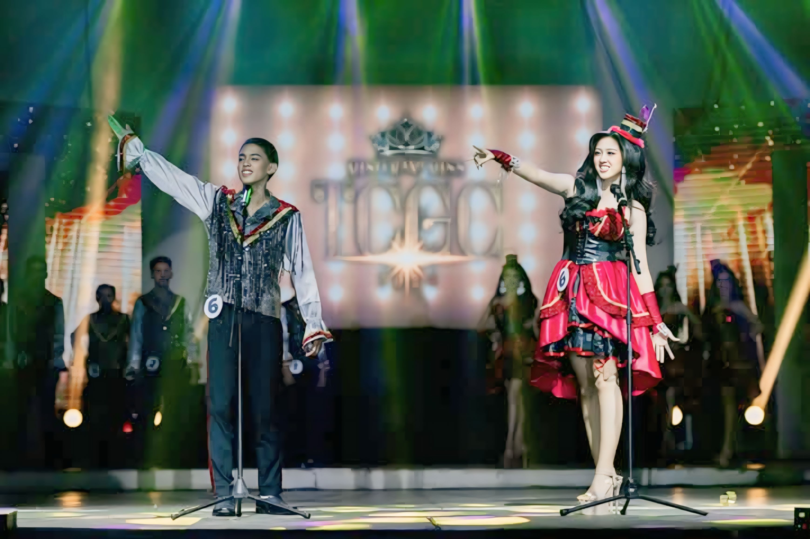
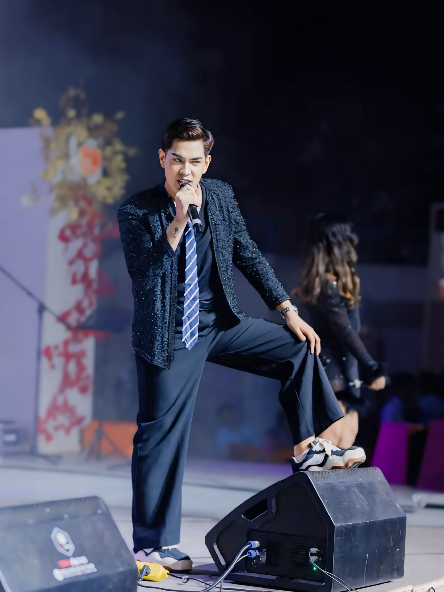
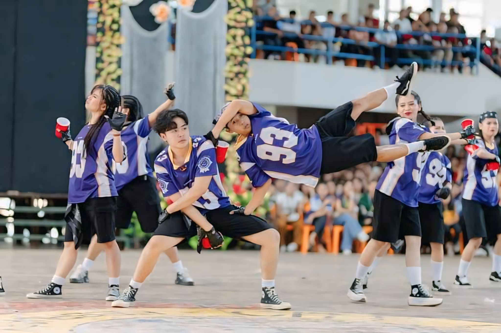

This moment shows the two beauty pageant contestants share an emotional moment on stage, holding hands under the spotlight, as they await the announcement of the winner.
Our Institute Participant Mr Quiros and Miss Ramos. Though they didnt got the crown of victory, our institute is very much proud of them.
This photo describes a young guitarist deeply immersed in his performance on stage. Dressed in a light blue jacket adorned with patches and paired with stylish green sneakers, he skillfully plays a white electric guitar. The stage lighting highlights his concentration, while the blurred audience in the background adds a sense of focus and intimacy to the moment.
This showcases a confident performer mid-song, exuding charisma on stage. Dressed in a glittery black jacket, tie, and loose-fitting pants, he strikes a commanding pose with one foot propped on a stage light. Holding the microphone close, his intense expression captivates the audience, while the soft stage lighting highlights his presence. The blurred background adds depth and energy to the scene.
This showcase a passionate dancer performs energetically in front of a lively audience during the street dance competition, exuding confidence and charisma.
A dynamic dance crew captivates the audience with an intense and synchronized performance, showcasing athleticism and energy in their striking blue jerseys.